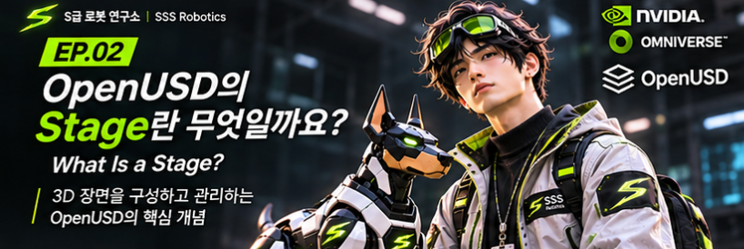
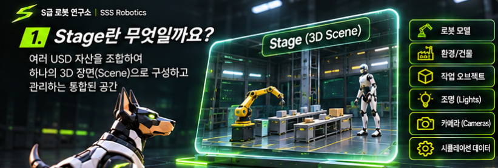
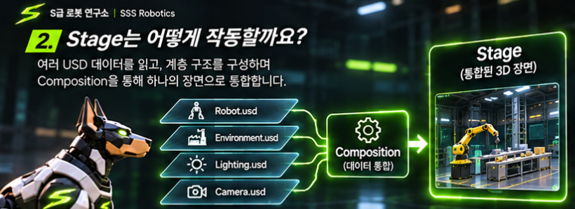
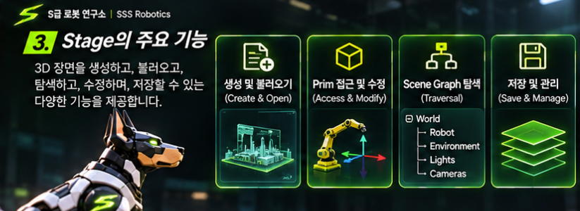
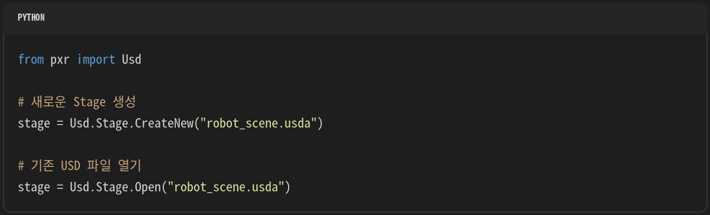
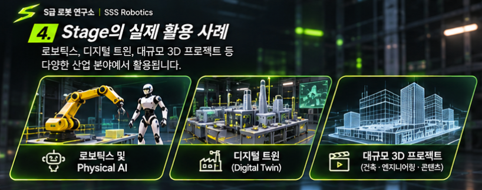
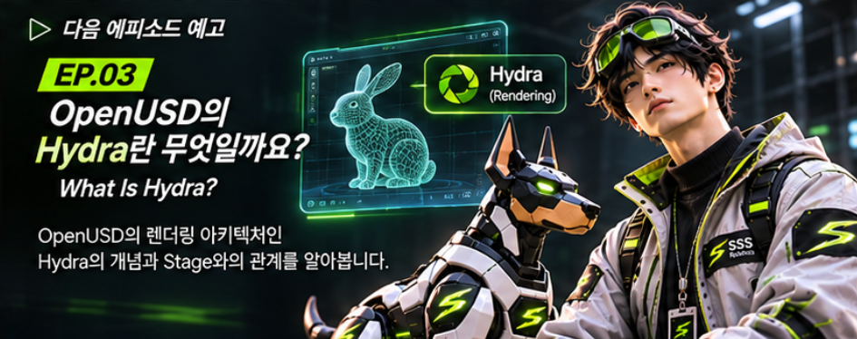

• Youtube : https://www.youtube.com/@sssrobotics

📌 안녕하세요!
S급 로봇 연구소(SSS Robotics)입니다. 🤖지난 EP.01에서는 OpenUSD를 사용하는 이유와 주요 장점에 대해 알아보았습니다.
이번 EP.02에서는 OpenUSD의 가장 기본적인 구성 요소 중 하나인 Stage(스테이지) 에 대해 살펴보겠습니다.3D 환경에서 여러 모델과 오브젝트, 조명, 카메라 등을 하나의 장면으로 구성하려면 어떻게 해야 할까요?
OpenUSD에서는 이러한 장면을 구성하고 관리하는 중심 역할을 Stage가 담당합니다.
이번 글에서는 Stage의 개념부터 작동 방식, 실제 활용 사례까지 차근차근 알아보겠습니다.

📚 목차 (Contents)
📖 오늘의 진행 내용 (Today's Topics)
📕 1. OpenUSD의 Stage란 무엇일까요?

Stage(스테이지)는 OpenUSD에서 3D 장면(Scene)을 구성하고 관리하는 핵심 개념입니다.
쉽게 설명하면, 여러 3D 객체와 데이터를 하나의 장면으로 모아 보여주는 통합된 공간이라고 이해할 수 있습니다.
예를 들어 로봇이 공장 내부에서 작업하는 시뮬레이션 환경을 만든다고 가정해 보겠습니다.
이 환경에는 다음과 같은 요소들이 필요합니다.
- 로봇 모델
- 공장 건물 및 주변 환경
- 작업 테이블과 물체
- 조명 및 카메라
- 시뮬레이션 관련 데이터
Stage는 이러한 요소들을 하나의 장면 구조 안에서 통합하여 관리할 수 있도록 지원합니다.
여기서 중요한 점은 Stage 자체가 단순한 USD 파일을 의미하는 것은 아니라는 것입니다.
Stage는 하나의 Root Layer를 기반으로 여러 USD Layer와 참조된 데이터를 결합하여 최종적으로 구성된 장면(Scene Graph)을 표현합니다.
📄 1-1. Stage와 USD 파일의 관계
OpenUSD를 처음 접할 때 혼동하기 쉬운 부분이 바로 Stage와 USD 파일의 차이입니다.
USD 파일은 3D 장면을 구성하는 데이터를 저장하는 역할을 합니다.
반면 Stage는 해당 데이터를 불러오고 여러 요소를 조합하여 실제 작업할 수 있는 통합된 장면으로 표현합니다.
예를 들어 다음과 같은 구조를 생각할 수 있습니다.
- Robot.usd : 로봇 모델 데이터
- Environment.usd : 공장 환경 데이터
- Lighting.usd : 조명 데이터
- Camera.usd : 카메라 데이터
이러한 여러 USD 데이터를 하나의 Stage에서 조합하면 완성된 공장 시뮬레이션 환경을 구성할 수 있습니다.
즉, 여러 개의 USD 자산을 하나의 통합된 3D 장면으로 관리할 수 있다는 것이 핵심입니다.
📕 2. Stage는 어떻게 작동할까요?

Stage는 단순히 3D 객체를 모아놓는 공간이 아닙니다.
여러 USD 데이터를 읽어 들이고, 각 데이터의 관계와 우선순위를 계산하여 하나의 최종 장면을 구성합니다.
이러한 과정을 Composition(컴포지션)이라고 합니다.
📄 2-1. Scene Graph와 Prim의 구성
Stage 내부에는 Scene Graph(씬 그래프)라는 계층적 구조가 존재합니다.
Scene Graph는 3D 장면에 포함된 다양한 객체와 요소들을 계층적으로 구성하는 데이터 구조입니다.
이 구조를 구성하는 기본 단위가 바로 Prim(프림)입니다.
Prim은 로봇, 건물, 카메라, 조명 등 장면을 구성하는 개별 요소를 나타냅니다.
예를 들어 다음과 같은 구조를 만들 수 있습니다.
- Stage
- World
- Robot
- Body
- Arm
- Camera
- Environment
- Floor
- Wall
- Table
- Lights
- Cameras
- Robot
- World
이처럼 Stage는 여러 Prim을 계층적으로 관리하면서 전체 장면의 구조를 표현합니다.
※ Prim의 정확한 개념과 역할은 EP.05에서 더 자세히 다루겠습니다.
📄 2-2. Composition을 통한 데이터 통합
OpenUSD의 중요한 특징 중 하나는 여러 데이터를 조합하여 하나의 장면을 구성할 수 있다는 점입니다.
예를 들어 로봇 모델과 공장 환경을 각각 별도의 USD 자산으로 제작했다고 가정해 보겠습니다.
기존 방식에서는 데이터를 하나의 장면으로 통합하기 위해 별도의 병합이나 변환 작업이 필요할 수 있습니다.
하지만 OpenUSD에서는 Layer, Reference 등의 기능을 활용하여 각 자산을 독립적으로 유지하면서 하나의 Stage에 통합할 수 있습니다.
이러한 방식은 다음과 같은 장점을 제공합니다.
- 기존 3D 자산의 재사용
- 여러 데이터의 유연한 조합
- 개별 자산 수정 및 관리
- 비파괴적인 협업 환경
- 대규모 3D 장면의 효율적인 구성
즉, 하나의 거대한 3D 파일을 만드는 대신 여러 개의 독립적인 자산을 조합하여 복잡한 환경을 구성할 수 있습니다.
📕 3. Stage의 주요 기능

Stage는 OpenUSD에서 다양한 작업을 수행할 수 있도록 여러 기능을 제공합니다.
📄 3-1. Stage 생성 및 불러오기 (Create & Open)
새로운 3D 장면을 만들거나 기존 USD 파일을 불러올 수 있습니다.
- 새로운 Stage 생성
- 기존 USD 파일 열기
- 여러 USD 데이터 통합
Python에서는 다음과 같은 API를 사용할 수 있습니다.

PYTHON 코드
이를 통해 Python 환경에서도 USD 장면을 생성하고 관리할 수 있습니다.
📄 3-2. Prim 접근 및 수정 (Access & Modify)
Stage를 통해 장면 내부에 존재하는 Prim에 접근하고 데이터를 수정할 수 있습니다.
예를 들어 로봇의 위치나 회전, 크기 등의 정보를 변경하거나 새로운 객체를 추가할 수 있습니다.
이러한 기능은 3D 환경을 프로그래밍 방식으로 제어할 때 매우 유용합니다.
📄 3-3. Scene Graph 탐색 (Scene Graph Traversal)
Stage 내부에 구성된 계층 구조를 탐색할 수 있습니다.
이를 통해 특정 로봇이나 객체를 찾거나, 장면에 포함된 다양한 요소를 순차적으로 확인할 수 있습니다.
이 기능은 대규모 시뮬레이션 환경에서 특정 객체를 검색하거나 데이터를 처리할 때 활용됩니다.
📄 3-4. 데이터 저장 및 관리 (Save & Manage)
Stage에서 변경한 데이터를 USD Layer에 저장할 수 있습니다.
또한 여러 Layer를 활용하면 원본 데이터를 유지하면서 필요한 부분만 수정하는 작업도 가능합니다.
이러한 방식은 여러 개발자가 하나의 3D 프로젝트를 함께 진행하는 환경에서 유용합니다.
📕 4. Stage의 실제 활용 사례

Stage는 다양한 산업 분야에서 복잡한 3D 환경을 구성하고 관리하는 데 활용됩니다.
📄 4-1. 로보틱스 및 Physical AI
로봇 시뮬레이션 환경을 구성하는 경우 Stage를 활용하여 로봇과 주변 환경을 하나의 장면으로 통합할 수 있습니다.
예를 들어 Isaac Sim에서 다음과 같은 요소를 구성할 수 있습니다.
- 로봇 모델 및 관절 구조
- 가상 공장 및 작업 공간
- 카메라와 각종 센서
- 조명 및 주변 환경
- 시뮬레이션에 필요한 물리적 요소
이를 통해 실제 로봇을 투입하기 전에 가상 환경에서 다양한 작업 상황을 구성하고 검증할 수 있습니다.
📄 4-2. 디지털 트윈 (Digital Twin)
제조 및 산업 환경에서도 Stage를 활용할 수 있습니다.
공장 내부의 설비, 로봇, 생산라인 등을 개별 USD 자산으로 관리하고 이를 하나의 Stage에 통합하면 복잡한 산업 환경을 3D로 표현할 수 있습니다.
이러한 환경은 디지털 트윈 구축과 가상 검증을 위한 기반으로 활용될 수 있습니다.
📄 4-3. 대규모 3D 프로젝트
건축, 엔지니어링, 영화 및 애니메이션 분야에서도 여러 3D 자산을 통합하여 하나의 장면을 구성하는 작업이 필요합니다.
Stage는 이러한 복잡한 데이터를 계층적으로 관리하고 여러 작업자가 효율적으로 협업할 수 있도록 지원합니다.
📜 회고 및 다음 과제 (Retropective&Next Steps)

오늘은 OpenUSD의 핵심 개념인 Stage에 대해 알아보았습니다.
📌 핵심 내용을 다시 정리해 보겠습니다.
- Stage란? 여러 USD 데이터가 조합되어 구성된 통합된 3D 장면을 표현합니다.
- Scene Graph란? Stage 내부의 객체와 요소들을 계층적으로 구성하는 구조입니다.
- Composition이란? 여러 Layer와 USD 데이터를 조합하여 하나의 장면을 구성하는 과정입니다.
- Stage의 역할은? 3D 장면을 생성하고 불러오며, 내부 데이터를 탐색하고 수정 및 저장할 수 있도록 지원합니다.
특히 로보틱스와 Physical AI 분야에서는 Stage를 통해 로봇과 가상 환경을 하나의 시뮬레이션 공간으로 구성할 수 있다는 점이 중요합니다.
OpenUSD를 제대로 이해하기 위해서는 Stage와 Scene Graph의 관계를 먼저 이해하는 것이 좋습니다.
🎬 다음 에피소드 예고

EP.03 OpenUSD의 Hydra란 무엇일까요? (What Is Hydra?)
다음 시간에는 OpenUSD의 렌더링 아키텍처와 관련된 Hydra에 대해 알아보겠습니다.
3D 장면을 구성하는 Stage와 실제 화면에 장면을 표현하는 렌더링 시스템은 어떤 관계가 있을까요?
다음 에피소드에서 함께 살펴보겠습니다!
👥 참고 문헌 (References)

- NVIDIA Learn OpenUSD – Stage
https://docs.nvidia.com/learn-openusd/latest/stage-setting/stage.html
- NVIDIA Omniverse Documentation – Stage
https://docs.omniverse.nvidia.com/usd/latest/learn-openusd/terms/stage.html
- OpenUSD Official Documentation – UsdStage
📨 문의하기 (Contact us)


- Youtube : https://www.youtube.com/@sssrobotics
- Blog : https://www.sssrobotics.com
#OpenUSD #오픈USD #USD Stage #OpenUSD Stage #스테이지 #NVIDIA #엔비디아 #NVIDIA Omniverse #엔비디아 옴니버스 #3D 시뮬레이션 #Scene Graph #씬그래프 #Prim #프림 #USD Layer #Composition #Isaac Sim #로봇 시뮬레이션 #Physical AI #S급로봇연구소